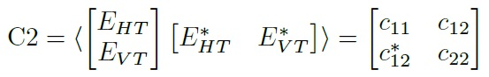
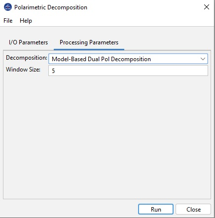

Polarimetric Decomposition Operator
This operator performs the following polarimetric
decompositions for a full polarimetric SAR product:
- Sinclair Decomposition
- Pauli Decomposition
- Freeman-Durden Decomposition
- Yamaguchi Decomposition
- H-A-Alpha Quad Pol Decomposition
- Touzi Decomposition
- Van Zyl Decomposition
- Cloude Decomposition
- Huynen Decomposition
- Yang Decomposition
- Krogager Decomposition
- Cameron Decomposition
- Generalized Freeman-Durden Decomposition
- Model-Free 3-Component Decomposition (MF3CF)
- Model-Free 4-Component Decomposition (MF4CF)
and the following decompositions for a dual polarimetric (C2) SAR product:
- H-Alpha Dual Pol Decomposition
- Model-Based Dual Pol Decomposition
Sinclair Decomposition
Let
be the complex scatter matrix. The Sinclair decomposition produces (R,
G, B) bands with the following intensities
- Red: |Svv|2,
- Green: |(Shv + Svh)/2|2,
- Blue: |Shh|2,
The main drawback of this decomposition is the physical interpretation of the resulting RGB
image.
Pauli Decomposition
The (R, G, B) bands produced by the Pauli decomposition correspond to
the following intensities [1]:
- Red (band
Pauli_r): 0.5*|Shh - Svv|2, which represents
the power scattered by targets characterized by double- or even-bounce scattering, for example
a wall and the ground forming a dihedral
- Green (band
Pauli_g): 0.5*|Shv + Svh|2, which
represents the scatter power by targets that are able to return
the orthogonal polarization, for example the volume scattering produced
by the forest canopy
- Blue (band
Pauli_b): 0.5*|Shh + Svv|2, which represents
the contribution of single- or odd-bounce scattering, for example from a rough surface
(bare soil, water)
So in a Pauli RGB image, buildings tend to look red, forests green and bare
surfaces or water blue. The three bands are written in dB. For a covariance (C3) or coherency (T3)
input, the bands are the equivalent diagonal elements T22, T33 and
T11 of the coherency matrix.
Freeman-Durden Decomposition
The Freeman decomposition models the covariance matrix as the
contribution of three scattering mechanisms [7]:
- canopy scatter from a cloud of randomly oriented dipoles, forest for example;
- even- or double-bounce scatter from a pair of orthogonal surfaces with different dielectric constants;
- Bragg scatter from a moderately rough surface.
The power scattered by the components of the above three scattering
mechanisms are employed to generate a RGB image as the following:
- Red: the power scattered by the double-bounce component of the covariance
matrix
- Green: the power scattered by the volume scattering component of the
covariance matrix
- Blue: the power scattered by the surface-like scattering
component of the covariance matrix
Yamaguchi Decomposition
The three-component Freeman-Durden decomposition [7] can be
successfully applied to SAR observations under the reflection symmetry
assumption. However, there exists areas in an SAR image where the
reflection symmetry condition does not hold. Yamaguchi et al. proposed,
in 2005 [8], a four-component scattering model by introducing an additional
term corresponding to nonreflection symmetric cases. The fourth
component introduced is equivalent to a helix scattering power. This
helix scattering power term appears in heterogeneous areas (complicated
shape targets or man-made structures) whereas disappears for almost all
natural distributed scattering. Therefore, Yamaguchi decomposition
models the covariance matrix as the following four scattering
mechanisms:
- volume;
- double-bounce;
- surface; and
- helix scatter components.
H-A-Alpha Decomposition
The H-A-Alpha decomposition [9] is based on the eigen decomposition of the coherency matrix [T3].
Let λ1, λ2, and λ3 be the eigenvalues of the coherency matrix (λ1 > λ2 > λ3 > 0), and u1, u2
and u3 be the corresponding eigenvectors
which can be expressed as the following:
Then three secondary parameters are defined as the follows:
- Entropy:
- Anistropy:
- Alpha:
Touzi Decomposition
In 2007, for the monostatic scattering case, Ridha Touzi
has proposed in [2] a new Target Scattering Vector Model (TSVM). Based on
the Kennaugh-Huynen decomposition, this model allows to extract four
roll-invariant parameters:
- Kennaugh-Huynen maximum polarization parameter: orientation angle (Ψ);
- Kennaugh-Huynen maximum polarization parameter: helicity (τ);
- Symmetric scattering type magnitude (α);
- Symmetric scattering type phase (Φ).
The roll-invariant incoherent target decomposition, i.e. Touzi decomposition, is as the following:
- Compute target coherency matrix [T3] with a sliding window;
- Perform eigendecomposition on the coherency matrix;
- Apply the new target scattering vector model to each eigenvector to extract four parameters (Ψk, τk, αk, Φk, k = 1, 2, 3).
- Compute averaged parameters (Ψ, τ, α, Φ):
Van Zyl Decomposition
The Van Zyl decomposition [10] assumes that the reflection
symmetry hypothesis establishes and the correlation between
co-polarized and cross-polarized channels is zero. The assumption is
generally true in case of natual media such as soil and forest. With
such an assumption, the eigen decomposition of the averaged covariance
matric C3 can be given analytically and C3 can be expressed in the following manner:

The van Zyl decomposition thus shows that the first two eigenvectors
represent equivalent scattering matrices that can be interpreted in
terms of odd and even numbers of reflections.
The operator writes the cross-polar eigenvalue as volume (VanZyl_vol_g) and assigns each
co-polar eigenvalue to surface (VanZyl_surf_b) or double bounce (VanZyl_dbl_r)
by the type of its eigenvector. Where Re<SHHSVV*> ≥ 0 the larger
eigenvalue is surface; where it is negative (double bounce dominates, for example buildings parallel to the
track) the larger eigenvalue is double bounce. The three bands are linear powers.
Changed in SNAP 15: earlier versions always labelled the larger co-polar eigenvalue as surface, so
in double-bounce-dominated areas their surface and double-bounce bands were swapped.
Cloude Decomposition
The Cloude decomposition [1][9] is an eigenvector based
decomposition. It idetifies the dominant scattering mechanism via the
extraction of the largest eigenvalue.
Huynen Decomposition
The Huynen decomposition splits the window-averaged coherency matrix
[T3] into one equivalent single (pure) target and a residual "noise" part.
From T3 the operator computes the Huynen parameters A0, B0,
B, C, D, E, F, G and H of the single target. Three of them describe the target in a simple way:
- 2A0 (band
2A0_b, blue): the symmetric, regular part of the target;
- B0+B (band
B0_plus_B_r, red): the target irregularity;
- B0−B (band
B0_minus_B_g, green): the target non-symmetry.
These three bands are written in dB and form an RGB image. Optionally, the operator also writes the
nine elements of the single-target coherency matrix (bands T11, T12_real,
T12_image, T13_real, T13_imag, T22,
T23_real, T23_imag, T33), in linear units.
Yang Decomposition
The Yang decomposition is a more stable form of the Huynen decomposition.
The Huynen single-target extraction divides by A0, so it becomes unreliable when
A0 is small. When A0 is less than 10% of the first element of the Kennaugh
matrix, the Yang decomposition first rotates the Kennaugh matrix to a polarization basis where
A0 is larger, performs the Huynen decomposition there and rotates the result back.
Otherwise it gives the same result as Huynen. The output bands are the same as for the Huynen
decomposition.
Krogager Decomposition
The Krogager decomposition [11] describes the target as the sum of three coherent
scatterers: a sphere (odd-bounce or surface), a diplane (double-bounce) and a helix. The operator
computes the three weights from the window-averaged coherency matrix [T3]:
- Red (band
kd_r): kd, the diplane (double-bounce) component;
- Green (band
kh_g): kh, the helix component;
- Blue (band
ks_b): ks, the sphere (surface) component.
The values are linear amplitudes (square roots of powers), not dB.
Cameron Decomposition
The Cameron decomposition is a coherent decomposition. It works on the scattering
matrix of each pixel, without a sliding window, so the input must be the full polarimetric
scattering matrix (I and Q bands), not a C3 or T3 matrix. After averaging HV and VH (reciprocity),
it splits the scattering matrix into its maximum symmetric component and a non-symmetric remainder.
The output bands are:
i_HH, q_HH, i_HV, q_HV, i_VH,
q_VH, i_VV, q_VV: the normalised maximum symmetric
scattering matrix (unit norm, with HV = VH);span: the norm of the scattering matrix (the square root of the total power);tau: the angle, in radians, between the scattering matrix and its maximum
symmetric component. It is 0 for a symmetric target and grows as the target becomes less
symmetric.
Changed in SNAP 15: tau now uses the Hermitian (conjugate) inner product. Symmetric
targets with complex eigenvalues, such as a quarter-wave plate, now give 0; earlier versions gave up to
90°. Real scattering matrices are unchanged.
H-Alpha Dual Pol Decomposition
This is the dual polarimetric version of the H-A-Alpha decomposition. It uses the
eigenvalues and eigenvectors of the window-averaged 2×2 covariance matrix [C2] of a
dual-pol product (for example VV+VH or HH+HV) and outputs the bands Entropy,
Anisotropy and Alpha (degrees). With only two channels, these values are
not directly comparable with the quad-pol H-A-Alpha results.
Generalized Freeman-Durden Decomposition
The Generalized Freeman-Durden decomposition in [3] is
also a model-based decomposition. Similar to the Freeman-Durden
decomposition, it assumes that the main backscattering components
are direct backscatter from the underlying surface, double-bounce from
a pair of orthogonal surfaces, and direct volume scattering from the
top layer. With the 2-layer model and the assumptions above, we have
more parameters than the measurements. Generally, to invert the
modle, more assumptions on the parameters are needed.With the
Generalized Freeman-Durden decomposition, it is assumed that the
surface and dihedral mechanisms are orthogonal. Then the power
scattered by the three components can be computed by inverting the
model.
Model-free 3 Component Decomposition (MF3CF)
Model-free 3 component decomposition technique [4] does
not consider any volume model for the computation of the three
scattering power components. The scattering power components are
roll-invariant. The total power is conserved after decomposition and
all the scattering power components
are non-negative. The target scattering type parameter is represented
as:

where, ΘFP is the target characterization parameter which varies from -45 to 45 degrees, mFP is the 3D Barakat degree of polarization,
T11, T22 and T33 are the elements of the coherency matrix and Span is the total power of coherency
matrix T3.
The scattering power components are:

PdFP is the even bounce power component, PsFP is the odd bounce power component and
PvFP is the diffused power component.
Model-Free 4-Component Decomposition (MF4CF)
Model-free 4 component decomposition technique [5] does not consider
any volume model for the computation of the four scattering power
components. The scattering power components are roll-invariant. The
total power is conserved after decomposition and all the scattering
power components
are non-negative. However, in this decomposition a scattering asymmetry
parameter is introduced which captures the helicity.
The scattering type parameters are:

where, ΤFP is the target asymmetry parameter and ΘFP is the target characterization parameter. K11, K14
and K44 are the elements of the Kennaugh matrix.
The four scattering power components are:

Pd is the even bounce power component, Ps is the odd bounce power component,
Pv is the diffused power component and Pv is the asymmetry (helix) power component.
Model-Based Dual Pol Decomposition
A new family of model-based
decompositions adapted for dual-pol radar data has been proposed in [6]. The
two basic elements of the decomposition are a flexible volume scattering term
and a polarized remainder. Here the widely used random dipole cloud is employed as a volume
model. For each coherence matrix C2,

its corresponding Stokes vector s can be decomposed into the following two components:
where mv is the volume power, ms
is the total polarized power. These two angles (α, δ) relate to the amplitude
and phase of the complex polarization ratio defining the elliptical
polarization state P.
The decomposition result can be resented in (R, G, B) bands as the follows:
- R = 10log10(ms)
- G = 10log10(mv)
- B = R - G
and presented in (H, S, V) bands as the follows:
- The Hue component is equal to δ (scaled in the range ±180).
- The Saturation component is the coherence between the polarimetric channels, obtained from C2 as shown below:
- The Value component is the total backscattered power, i.e. the span of C2.
Input and Output
- The
input to this operator can be a full polarimetric SAR product with 8
bands,
i.e. I and Q bands for HH, VV, HV and VH polarizations, or covariance
matrix generated by Covariance Matrix Generation operator, or coherency
matrix output by Coherency Matrix Generation operator.
- The output of this operator are bands corresponding to the decomposition result.
Parameters Used
For all decompositions, the following processing parameter is needed (see Figure
1):
- Decomposition: the decomposition method. Default: Sinclair Decomposition.
- Orientation angle correction (GPT and graph XML only): the parameter
applyOrientationAngleCorrection (default false) is not shown in the
dialog. When set to true, the operator first removes the polarization orientation
angle shift from the input (the same processing as the
Orientation Angle Correction operator) and then
runs the selected decomposition. This reduces the overestimation of volume scattering caused by
terrain slopes and buildings that are not aligned with the radar track. It applies only to T3, C3
or scattering-matrix input; C4, T4 and dual-pol (C2) input are passed on uncorrected. Do not
combine it with the Cameron decomposition: the correction turns a scattering-matrix input into
T3, which Cameron cannot use. In SNAP Desktop, run Orientation Angle Correction before the
decomposition instead.
The Window Size used by the decompositions below is the sliding window, in pixels, over which
the covariance or coherency matrix is averaged. Range 1–100; default 5. The Sinclair, Pauli and
Cameron decompositions work on single pixels and do not average.

Figure 1. Dialog box for
Polarimetric Decomposition operator
For Freeman-Durden decomposition, an extra parameter is needed (see Figure 2):
- Window Size: dimension of sliding window for computing mean covariance or coherence matrix

Figure 2. Dialog box for Freeman-Durden decomposition
For Yamaguchi decomposition, the following parameters are needed (see Figure 3):
- Window Size: dimension of sliding window for computing mean covariance or coherence matrix

Figure 3. Dialog box for Yamaguchi decomposition
For H-A-Alpha decomposition, the following extra parameters are needed (see Figure 4):
- Window Size: dimension of sliding window for computing mean covariance or coherence matrix
- Checkbox for outputing parameters Entropy (H), Anistropy (A) and Alpha
- Checkbox for outputing parameters Beta, Delta, Gamma and Lambda
- Checkbox for outputing parameters Alpha1, Alpha2 and Alpha3
- Checkbox for outputing parameters Lambda1, Lambda2 and Lambda3

Figure 4. Dialog box for H-A-Alpha decomposition
For Touzi decomposition, the following extra parameters are needed (see Figure 5):
- Window Size: dimension of sliding window for computing mean covariance or coherence matrix
- Checkbox for outputing parameters Psi, Tau, Alpha and Phi
- Checkbox for outputing parameters Psi1, Tau1, Alpha1 and Phi1
- Checkbox for outputing parameters Psi2, Tau2, Alpha2 and Phi2
- Checkbox for outputing parameters Psi3, Tau3, Alpha3 and Phi3

Figure 5. Dialog box for Touzi decomposition
For Van Zyl decomposition, the following parameters are used (see Figure 6):
- Window Size: dimension of sliding window for computing mean covariance or coherence matrix

Figure 6. Dialog box for Van Zyl decomposition
For Model-free 3 component decomposition (MF3CF) decomposition, the following parameters are used (see Figure 7):
- Window Size: dimension of sliding window for computing mean covariance or coherence matrix

Figure 7. Dialog box for Model-free 3 component decomposition (MF3CF)
For Model-free 4 component decomposition (MF4CF) decomposition, the following parameters are used (see Figure 8):
- Window Size: dimension of sliding window for computing mean covariance or coherence matrix

Figure 8. Dialog box for Model-free 4 component decomposition (MF4CF)
For Model-Based Dual Pol decomposition, the following parameters are used (see Figure 9):
- Window Size: dimension of sliding window for computing mean covariance or coherence matrix

Figure 9. Dialog box for Model-Based Dual Pol decomposition
For Huynen and Yang decompositions, the following parameters are used:
- Window Size: dimension of sliding window for computing mean coherency matrix
- 2A0, B0_plus_B, B0_minus_B (in dB): output the three Huynen parameter bands in dB
(GPT parameter
outputHuynenParamSet0). Default: on.
- Pure target T0: output the nine elements of the single-target coherency matrix built from the
Huynen parameters (bands T11 to T33; GPT parameter
outputHuynenParamSet1).
Default: off.
At least one of the two checkboxes must be selected.
For Krogager and H-Alpha Dual Pol decompositions, the Window Size is used. The Cameron decomposition
has no extra parameters.
References
- Lee, J.-S., Pottier, E. (2009). Polarimetric Radar Imaging: From Basics to Applications. CRC Press, Boca Raton. doi:10.1201/9781420054989
- Touzi, R. (2007). Target scattering decomposition in terms of roll-invariant target parameters. IEEE Transactions on Geoscience and Remote Sensing, 45(1), 73–84. doi:10.1109/TGRS.2006.886176
- Cloude, S. R. (2009). Polarisation: Applications in Remote Sensing. Oxford University Press. doi:10.1093/acprof:oso/9780199569731.001.0001
- Dey, S., Bhattacharya, A., Ratha, D., Mandal, D., Frery, A. C. (2021). Target characterization and scattering power decomposition for full and compact polarimetric SAR data. IEEE Transactions on Geoscience and Remote Sensing, 59(5), 3981–3998. doi:10.1109/TGRS.2020.3010840
- Dey, S., Bhattacharya, A., Frery, A. C., López-Martínez, C., Rao, Y. S. (2021). A model-free four component scattering power decomposition for polarimetric SAR data. IEEE Journal of Selected Topics in Applied Earth Observations and Remote Sensing, 14, 3887–3902. doi:10.1109/JSTARS.2021.3069299
- Mascolo, L., Cloude, S. R., Lopez-Sanchez, J. M. (2022). Model-based decomposition of dual-pol SAR data: application to Sentinel-1. IEEE Transactions on Geoscience and Remote Sensing, 60, 1–19. doi:10.1109/TGRS.2021.3137588
- Freeman, A., Durden, S. L. (1998). A three-component scattering model for polarimetric SAR data. IEEE Transactions on Geoscience and Remote Sensing, 36(3), 963–973. doi:10.1109/36.673687
- Yamaguchi, Y., Moriyama, T., Ishido, M., Yamada, H. (2005). Four-component scattering model for polarimetric SAR image decomposition. IEEE Transactions on Geoscience and Remote Sensing, 43(8), 1699–1706. doi:10.1109/TGRS.2005.852084
- Cloude, S. R., Pottier, E. (1997). An entropy based classification scheme for land applications of polarimetric SAR. IEEE Transactions on Geoscience and Remote Sensing, 35(1), 68–78. doi:10.1109/36.551935
- van Zyl, J. J. (1989). Unsupervised classification of scattering behavior using radar polarimetry data. IEEE Transactions on Geoscience and Remote Sensing, 27(1), 36–45. doi:10.1109/36.20273
- Krogager, E. (1990). New decomposition of the radar target scattering matrix. Electronics Letters, 26(18), 1525–1527. doi:10.1049/el:19900979
Processing parameters (reference)
GPT operator: Polarimetric-Decomposition. Generated from the operator source; parameter names are those used in GPT and graph XML.
| Parameter | Type | Default | Allowed values | Unit | Description |
|---|
decomposition | String | Sinclair Decomposition | Sinclair Decomposition, Pauli Decomposition, Freeman-Durden Decomposition, Generalized Freeman-Durden Decomposition, Yamaguchi Decomposition, van Zyl Decomposition, H-A-Alpha Quad Pol Decomposition, H-Alpha Dual Pol Decomposition, Cloude Decomposition, Touzi Decomposition, Huynen Decomposition, Yang Decomposition, Krogager Decomposition, Cameron Decomposition, Model-free 3-component Decomposition, Model-free 4-component Decomposition, Model-Based Dual Pol Decomposition | | Decomposition |
windowSize | int | 5 | [1, 100] | | The sliding window size |
applyOrientationAngleCorrection | boolean | false | | | Apply polarization orientation angle correction (deshift) to the input T3 / C3 matrix before running the selected decomposition. Equivalent to chaining Orientation-Angle-Correction in front of this operator. |
outputHAAlpha | boolean | false | | | Output entropy, anisotropy, alpha |
outputBetaDeltaGammaLambda | boolean | false | | | Output beta, delta, gamma, lambda |
outputAlpha123 | boolean | false | | | Output alpha 1, 2, 3 |
outputLambda123 | boolean | false | | | Output lambda 1, 2, 3 |
outputTouziParamSet0 | boolean | false | | | Output psi, tau, alpha, phi |
outputTouziParamSet1 | boolean | false | | | Output psi1, tau1, alpha1, phi1 |
outputTouziParamSet2 | boolean | false | | | Output psi2, tau2, alpha2, phi2 |
outputTouziParamSet3 | boolean | false | | | Output psi3, tau3, alpha3, phi3 |
outputHuynenParamSet0 | boolean | true | | | Output 2A0_b, B0_plus_B, B0_minus_B |
outputHuynenParamSet1 | boolean | false | | | Output A0, B0, B, C, D, E, F, G, H |
Background
Prerequisites
- SLC product (not a TOPS burst product: apply TOPS Deburst first)
- Quad-pol SLC product (scattering matrix, or C3/T3 matrix) for the full-pol decompositions (Cameron needs the scattering-matrix input); dual-pol C2 input for the dual-pol decompositions (H-Alpha Dual Pol Decomposition, Model-Based Dual Pol Decomposition)
- Orientation-angle correction is available only through GPT or graph XML (parameter applyOrientationAngleCorrection), not in the dialog; otherwise run Orientation Angle Correction first
Next step